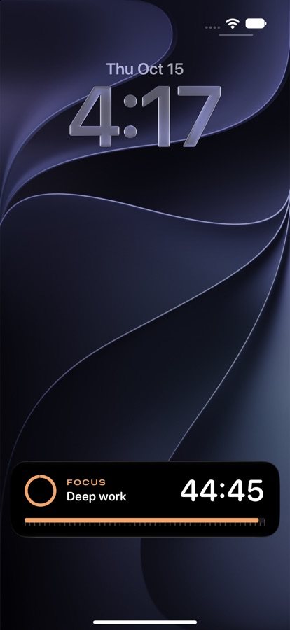
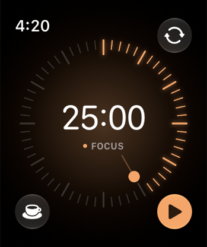
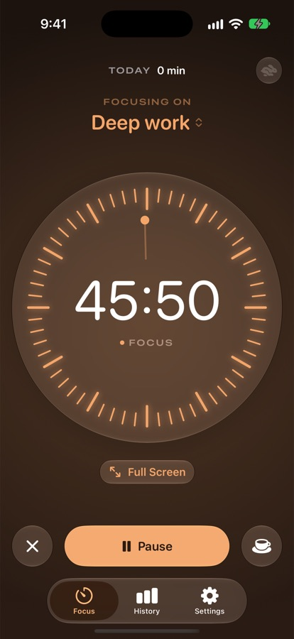
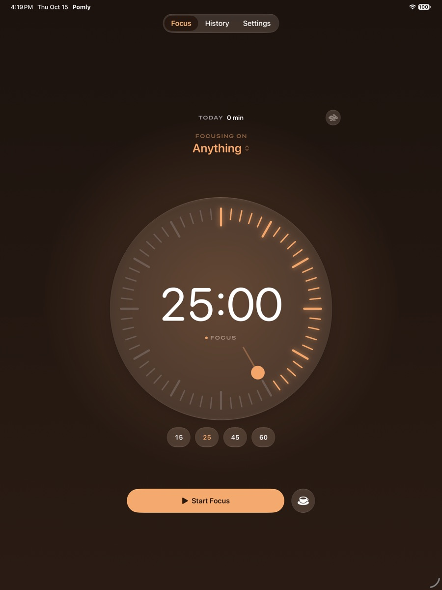
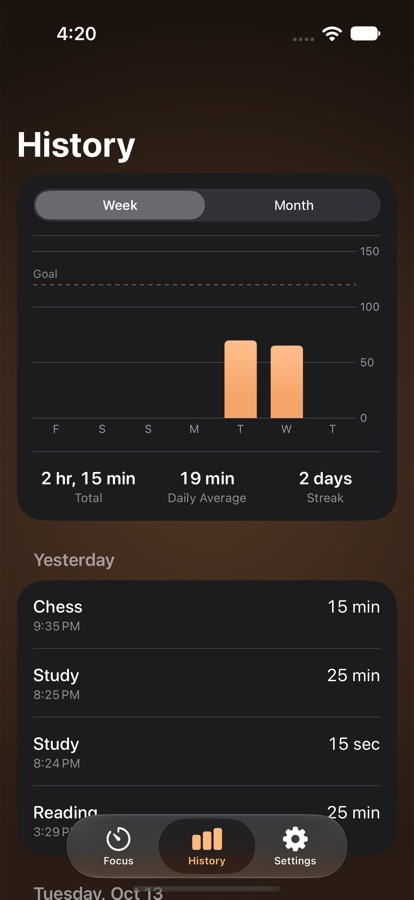

Drag.
Focus.
Rest.
A calm Pomodoro timer for iPhone, iPad, Mac and Apple Watch. One drag sets it. It rings when it's time for a break.


See it, then get it.
One timer. Every screen you own.

iPhoneRings through Silent and Focus, with Take a Break right on the alert.
Lock ScreenLive Activities, the Dynamic Island and StandBy keep the time in view.

iPadThe dial and your day side by side, with Home Screen widgets.

MacPress the menu bar icon and drag down to set it. ⌃⌥P from any app.
Apple WatchEdge to edge dial, Digital Crown, complications and the Smart Stack.

HistorySee where your focus went, by day and by label.
Everything a focus timer should be. Nothing it shouldn't.
One drag to set
Sweep the dial for 1 to 120 minutes, or tap 15, 25, 45 or 60.
An alarm that rings
Built on AlarmKit, so it breaks through Silent mode like a real alarm.
Sync with a code
Pair devices with six characters. Start on your Mac, pause on your Watch.
Widgets and Controls
Start a session from the Home Screen, Control Center or Siri.
A mini timer
A floating picture-in-picture dial on Mac, draggable anywhere.
Private by default
No account, no analytics, no ads. MIT licensed, every line on GitHub.
Get Pomly.
Free on every Apple platform. Version 1.0.1 · iOS, iPadOS, macOS, watchOS 26 or later.
Mac
Menu bar timer, mini timer and global shortcuts. Updates itself.
Download for Mac Not notarized yet: right-click Pomly › Open the first time.iPhone
Live Activities, widgets, Controls and Siri. Includes the Watch app.
Add to AltStore Download IPA Sideload with AltStore or Sideloadly and a free Apple ID.iPad
The same app, with the dial and Today side by side.
Add to AltStore Download IPA One IPA for iPhone and iPad.Apple Watch
Installs alongside the iPhone app. Complications and the Smart Stack.
Install Steps Build from Source Open in Xcode with a free Apple ID.